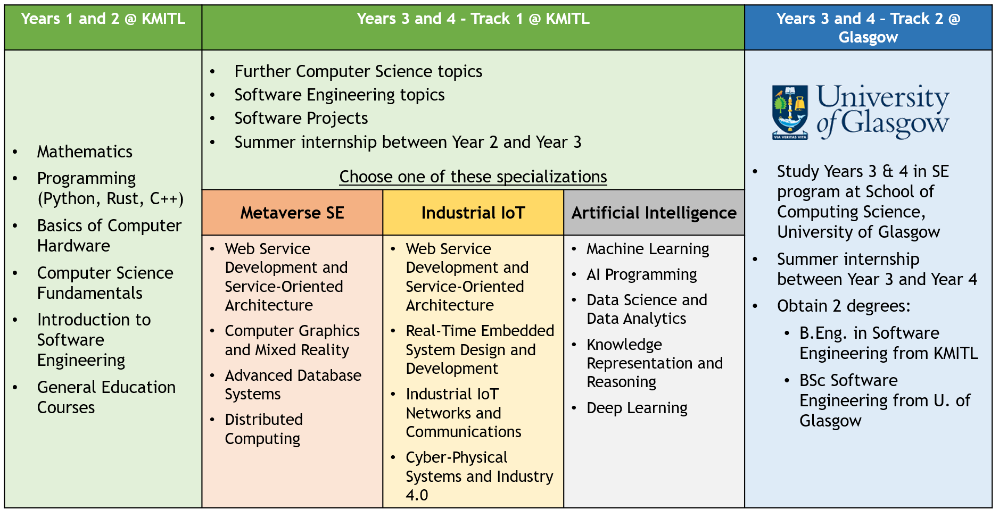

B.Eng. in Software Engineering Program
The B.Eng. in Software Engineering Program
is a 4-year undergraduate program aiming at producing graduates
who are capable of working confidently in the international software
industry as well as pursuing postgraduate study and research in leading
universities worldwide. The curriculum of the program is designed
in accordance with the recent ACM/IEEE guideline for undergraduate
curriculum in software engineering.
Curriculum Overview - Study Plans

Year 1 and Year 2
In the first two years, the students will study basic courses in mathematics,
computer science, and software engineering and develop their programming skills
using various programming languages (including Python, C, C++, Java, etc.).
Also, the students will be trained to communicate correctly and effectively.
At the end of Year 2, every student is required to undertake an internship in
a software company for 8 - 10 weeks. All the courses in the first two years will
be held at the International College in the Bangkok Campus of KMITL.
Year 3 and Year 4 (KMITL)
In Year 3 and Year 4, the students will learn advanced topics in software engineering
and important software development methodologies that are used in practice. The students
will have opportunities to the apply the knowledge and skills they have acquired to conduct
a team software project in Year 3 and a one-year research project in Year 4. Students
entering Year 3 are required to take one of the following specializations:
1. Metaverse Software Engineering - Specializing inlarge and complex software for enterprises and digital transformation.
2. Industrial Internet of Things - Specializing in the Internet of Things, including embedded and mobile systems.
3. Artificial Intelligence - Specializing in applications of artificial intelligence and data science, including machine learning and Big Data.
The study plans for these three specializations differ in some required courses. Also the students are recommended to toe work on their
senior projects that utilize the knowledge of their respective specializations.
Year 3 and Year 4 (KMITL-Glassgow)
The students joining the KMITL-Glasgow Double-DegreeProgram will take courses in Years 3
and 4 in the Software Engineering program at the School of Computing Science, University of Glasgow.
Curriculum Courses
Year 1
Semester 1
01006710 : Introduction to Calculus
01286111 : Circuits and Electronics
01286120 : Elementary Systems Programming
01286121 : Computer Programming
96641002 : Digital Intelligence Quotient
96642170 : Introduction to Logic
Semester 2
01006717 : Differential Equations
01006718 : Discrete Mathematics
01286112 : Digital System Fundamentals
01286131 : Object-Oriented Programming
96641001 : Charm School
96641003 : Sports and Recreational Activities
96644034 : Technical Writing
Year 2
Semester 1
01006719 : Probability and Statistics 1
01286213 : Computer Architecture and Organization
01286222 : Data Structures and Algorithms
01286233 : Web Programming
96644042 : Professional Communication and Presentation
9664____ : General Education Elective
Semester 2
01006716 : Linear Algebra
01286223 : Computer Networks
01286228 : Algorithm Design and Analysis
01286232 : Software Engineering Principles
01286241 : Database Systems
96644___ : General Education Elective in Language and Communication
96644034 : Technical Writing